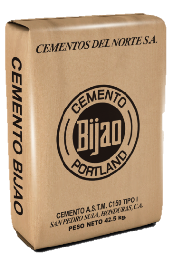

| Codigo |
Nombre |
Descripcion |
Precio |
Foto |
| ASTM C-150 |
Cemento Tipo I |
Cumple con los requisitos de la norma ASTM C-150. Se compone de
Clinker, caliza y yeso. Es un cemento Portland se utiliza para la
construcción especializada de obras que tienen un compromiso
estructural.
|
Lps. 210 |
 |
| ASTM C-150 |
Cemento Tipo II |
Cumple con los requisitos de la norma ASTM C-150. Este cemento se
utiliza donde puede ocurrir un ataque moderado de sulfatos. La
diferencia de este tipo de cemento es su composición mineralógica
|
Lps. 235 |
|
| ASTM C-150 |
Cemento Tipo V |
Este cemento se utiliza dónde puede ocurrir un ataque moderado de
sulfatos. La diferencia de este tipo de cemento es su composición
mineralógica; debido que el aluminato tricálcico (C3A) debe ser menor
a 5%
|
Lps. 240 |
 |
| ASTM C-91 |
Cemento de Albañilería |
Este tipo de cemento es un producto ideal para mezclas manejables y de
máxima adherencia. Se trata de un cemento Portland mezclado con
materiales inertes finamente molidos.
|
Lps. 240 |
|
| ASTM C-1157 |
Cemento Tipo GU |
Cumple con los requisitos de la norma ASTM C-1157 compuesta por
Clinker, puzolana, yeso y caliza. Este tipo de cemento alcanza altas
resistencias, impermeabilidad y durabilidad a largo plazo.
|
Lps. 240 |
|
| ASTM C-1157 |
Cemento Tipo HE |
Cumple con los requisitos de la norma ASTM C-1157. Apto para la
elaboración de estructuras que requieren alta resistencia inicial.
|
Lps. 255 |
|
| ASTM C-1157 |
Cemento Tipo LH |
Cumple con los requisitos de la norma ASTM C-1157 compuesta por
Clinker, puzolana, yeso y caliza. Aplicables en obras que no requieran
un desempeño alto de resistencia inicial. Es un cemento con
características únicas, mayor trabajabilidad y gran durabilidad.
|
Lps. 250 |
|
<
| ASTM C-1157 |
Cemento Tipo Block |
Este tipo de cemento cumple con los requisitos de la norma ASTM
C-1157, está diseñado para brindar altas resistencias iniciales. Su
aplicabilidad es ideal para elementos prefabricados en especial para
los bloques.
|
Lps. 245 |
|